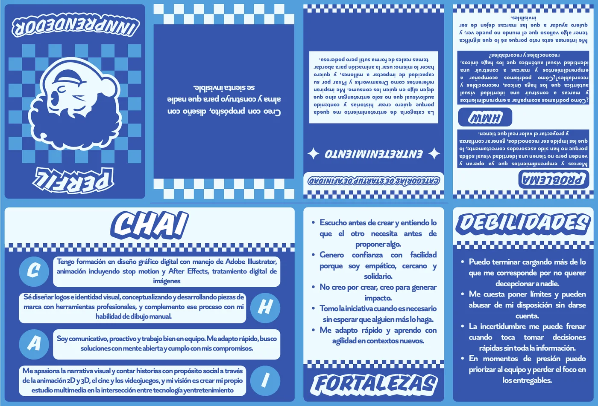

Innovación y emprendimiento · quinto semestre (2026-1)
Herramientas
Illustrator
Trabajo
Individual
El pedido
Mostrar nuestro perfil de manera creativa: quiénes somos, nuestro arquetipo, nuestro CHAI (conocimientos, habilidades, aptitudes e intereses), nuestras fortalezas y debilidades, entre otras cosas. Nos pidieron un diseño creativo y diferente.
Mi rol
Escogí la temática, hice la diagramación, diseñé el personaje y armé el desplegable.
Lo que cuenta
Mi arquetipo es El Jardinero, con El Cuidador y El Amante como arquetipos secundarios, y mi camino es el del Amor. En el desplegable están mi CHAI, mis fortalezas y debilidades, la categoría de startup de afinidad (entretenimiento), el problema que quiero resolver y mi pregunta «¿Cómo podríamos…?».
El desplegable, abierto

Se abre en dos filasLa fila de arriba queda al revés porque así se pliega al imprimirlo; usa los botones de abajo para girarlo o ampliarlo